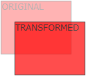

Graphic User Interface - CSS
Introduction
Formatting
Elements of Layouts
Layout Formatting
Selectors & Elements
Navigation Bars
Image Presentation
Media Types & Attributes
The following are CSS3 specific tutorials:
CSS3: Formatting
CSS3: Transforms & Transitions
CSS3: Animations
CSS3: User Interface
The last tutorial concerns browser compatibility:
Cross Browser
Transforms & Transitions
Transforms
Transforms are a CSS3 transformation effect that lets an element change shape, size and position. These transforms can be either 2D or 3D. Browsers specify support for this effect with version numbers followed by the -ms-, -webkit-, -moz- or -o- tags for IE, Chrome and Safari, Firefox and Opera respectively.
2D Transforms
There are a number of 2D Transform methods, including translate(), rotate(), scale(), skew(), matrix().
The translate() method moves an element from its initial position in both the x and y-axis.
-ms-transform: translate(50px,100px); /* IE 9 */
-webkit-transform: translate(50px,100px); /* Chrome, Safari, Opera */
transform: translate(50px,100px);
}

The rotate() method rotates an element clockwise at the given degree. In order to rotate the element counter-clockwise, invoke a negative degree in the specification.
-ms-transform: rotate(30deg); /* IE 9 */
-webkit-transform: rotate(30deg); /* Chrome, Safari, Opera */
transform: rotate(30deg);
}
The scale() method either increases or decreases the scale size in terms of width and height.
-ms-transform: scale(2,4); /* IE 9 */
-webkit-transform: scale(2,4); /* Chrome, Safari, Opera */
transform: scale(2,4);
}
The skew() method turns in the angle specified on the horizontal and vertical axis.
-ms-transform: skew(30deg,20deg); /* IE 9 */
-webkit-transform: skew(30deg,20deg); /* Chrome, Safari, Opera */
transform: skew(30deg,20deg);
}
Finally, the matrix() method combines all of the other 2D methods into one. This method takes six parameters containing mathematic functions.
-ms-transform: matrix(0.866,0.5,-0.5,0.866,0,0); /* IE 9 */
-webkit-transform: matrix(0.866,0.5,-0.5,0.866,0,0); /* Chrome, Safari, Opera */
transform: matrix(0.866,0.5,-0.5,0.866,0,0);
}
3D Transforms
3D transforms include the rotateX() and the rotateY() methods.
Image before a transformation:

-webkit-transform: rotateX(120deg); /* Chrome, Safari, Opera */
transform: rotateX(120deg);
}
...and after:
Image before a transformation:
-webkit-transform: rotateY(130deg); /* Chrome, Safari, Opera */
transform: rotateY(130deg);
}
...and after:
Transitions
CSS3 introduces a new feature called transitions, which allow us to add an effect when changing from one style to another, without using any Flash animations of JavaScripts.
In order to let an element gradually change from one style to another, you must specify both the CSS property to which you want to add an effect, and the duration of the effect.
-webkit-transition: width 2s; /* For Safari 3.1 to 6.0 */
transition: width 2s;
}